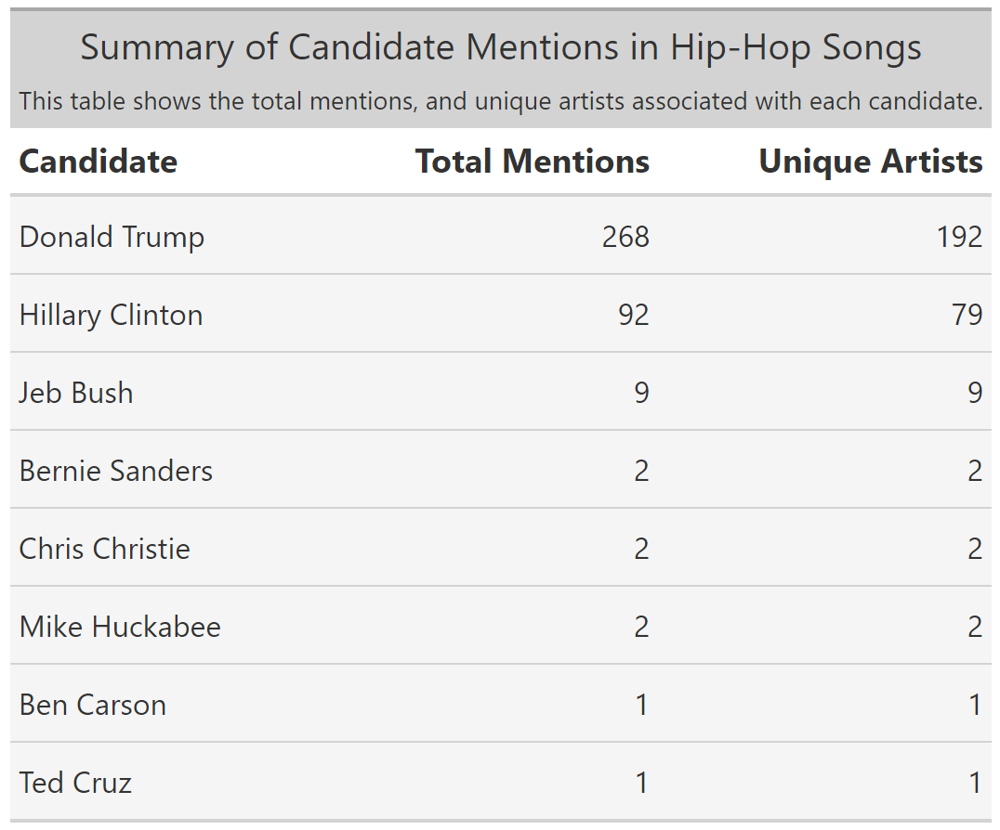
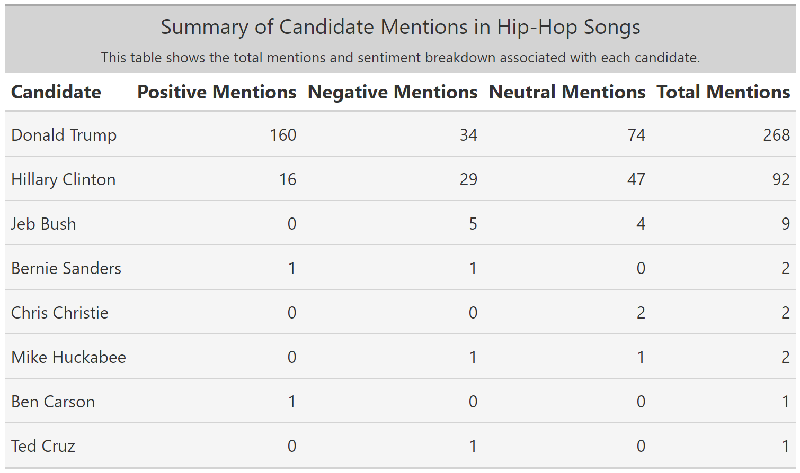

data = here::here("presentation-exercise","data","genius_hip_hop_lyrics.csv") #setting path
candidates = read.csv(data)Presentation Exercise
For this exercise, I explored charts and data from the 538 website. Among several interesting visualizations, one stood out: a scatterplot detailing mentions of 2016 primary candidates in hip-hop songs. I found this chart interesting due to its interactive nature. It features a tooltip that provides details such as the specific line referencing a candidate in the song, the album release date, song title, artist, and the candidate mentioned. My goal to recreate this interactive scatterplot to explore and analyze similar trends in cultural references to political figures in music.
I utilized ChatGPT to recreate the chart based on a specific prompt. I uploaded the original file from the 538 website and also attached a screenshot of the plot to aid in the recreation process. For more details on the prompts used and the complexity involved in recreating the chart, please refer to the Plotting section where I delve deeper into these aspects.
The original plot can be found in this link.
Loading Libraries
Initially, I attempted to recreate the chart using ggplot and plotly, but soon realized these libraries weren’t suitable for this task. After a few unsuccessful attempts, I switched to highcharter, which proved to be the appropriate library for creating the interactive scatterplot effectively.
Loading Data
Data Exploration
I’ve included simple data exploration to provide a better understanding of the dataset we’re working with today. Although the dataset remains largely unchanged, I’ve added a new variable for our analysis.
str(candidates)'data.frame': 377 obs. of 9 variables:
$ id : int 1 2 3 4 5 6 7 8 9 10 ...
$ candidate : chr "Mike Huckabee" "Mike Huckabee" "Jeb Bush" "Jeb Bush" ...
$ song : chr "None Shall Pass" "Wellstone" "Awe" "The Truth" ...
$ artist : chr "Aesop Rock" "Soul Khan" "Dez & Nobs" "Diabolic" ...
$ sentiment : chr "neutral" "negative" "neutral" "negative" ...
$ theme : chr "N/A" "N/A" "N/A" "political" ...
$ album_release_date: int 2011 2012 2006 2006 2007 2012 2001 2005 2013 2005 ...
$ line : chr "Wither by the watering hole, Border patrol / What are we to Heart Huckabee" "Might find the door but never touch the key / They get tricked by slick Mike Huckabee" "I heard Jeb Bush looking for a (inaudible)" "What you heard before ain't as big of a lesson / As George and Jeb Bush rigging elections" ...
$ url : chr "http://genius.com/Aesop-rock-none-shall-pass-lyrics" "http://genius.com/Soul-khan-wellstone-lyrics" "http://genius.com/Dez-and-nobs-awe-lyrics" "http://genius.com/Diabolic-the-truth-lyrics" ...summary(candidates) id candidate song artist
Min. : 1.0 Length:377 Length:377 Length:377
1st Qu.: 95.0 Class :character Class :character Class :character
Median :190.0 Mode :character Mode :character Mode :character
Mean :189.7
3rd Qu.:284.0
Max. :378.0
sentiment theme album_release_date line
Length:377 Length:377 Min. :1989 Length:377
Class :character Class :character 1st Qu.:2005 Class :character
Mode :character Mode :character Median :2011 Mode :character
Mean :2008
3rd Qu.:2014
Max. :2016
url
Length:377
Class :character
Mode :character
Data Manipulation
To recreate the chart accurately, I first created a new variable that counts the number of rows for each year using the album release date field. This step ensures that we have the correct number of plots for each candidate in the chart.
candidate_num <- candidates %>%
group_by(album_release_date) %>%
arrange(desc(candidate == "Donald Trump")) %>%
mutate(mention_id = row_number())Recreating the Chart
ChatGPT Prompt
The starting prompt is included below. It took more prompts to complete the chart and get it close to the original and even then it doesnt look exactly as the original but in my opinion ChatGPT did a really great job providing the code which I thought it would be a bit more difficult.
Could you use highcharter in R to replicate a chart similar to the one attached, depicting a point for every mention of a candidate in a song line from this dataset? Below is the code I’ve developed to preprocess the data for this purpose.
data1 <- data %>% group_by(album_release_date, candidate) %>% mutate(mention_id = row_number())
Initial Chart Code
The code below was created but noticed I had the error below which I needed to troubleshoot using a new prompt
Error in gsub(“</”, “\u003c/”, payload, fixed = TRUE) :input string 1 is invalid UTF-8
“hchart(candidate_num,”scatter”, hcaes(x = album_release_date, y = mention_id, group = candidate, tooltip = candidate)) %>% hc_title(text = “Every mention of 2016 primary candidates in hip-hop songs”) %>% hc_xAxis(title = list(text = “Year”), labels = list(format = ‘{value}’)) %>% hc_yAxis(title = list(text = “Mentions”)) %>% hc_tooltip(pointFormat = “Candidate: {point.candidate}
Album Release: {point.album_release_date}
Song: {point.song}
Line: {point.line}”) %>% hc_plotOptions(series = list(marker = list(enabled = TRUE, radius = 4)), scatter = list(stickyTracking = FALSE)) %>% hc_legend(enabled = TRUE)”
Code Fix
After asking ChatGPT to resolve this error message, I received a solution that worked effectively. This solution enabled me to create the initial chart, which required extensive formatting that I will elaborate on in the following section.
candidate_num <- candidate_num %>%
mutate(across(where(is.character), ~ iconv(., from = "ISO-8859-1", to = "UTF-8")))The Final Chart and Additional Prompts
I spent over 2 hours attempting to recreate the chart, making it challenging to recall all the prompts used. However, I can highlight some key aspects I needed to resolve.
Prompts themes:
- Sorting the plots to position Donald Trump at the bottom, like to the original chart.
- Implementing a tooltip that includes all necessary information in a correctly formatted manner.
- Setting the y-axis breaks accurately to display intervals of 5.
- Managing the color coding, which initially posed challenges but eventually worked without further prompting.
- Shifting the legend to the top of the chart.
- Adjusting the background to feature both horizontal and vertical lines.
Final Chart Code
hchart(candidate_num, "scatter", hcaes(x = album_release_date, y = mention_id, group = candidate, tooltip = candidate)) %>%
hc_title(text = "Every mention of 2016 primary candidates in hip-hop songs", style = list(fontWeight = "bold", fontSize = "25px")) %>%
hc_chart(
backgroundColor = "#f7f7f7", # Set chart background color
borderWidth = 1, # Add border around chart
borderColor = "#ccc" # Border color
) %>%
hc_xAxis(
title = list(text = FALSE),
labels = list(
format = '{value}',
style = list(
fontWeight = 'bold' # Bold style for all x-axis labels
)
),
gridLineWidth = 1, # Set grid line width
gridLineColor = "#ddd", # Set grid line color
gridLineDashStyle = "solid", # Set grid line style to solid
lineColor = "#000", # Set x-axis line color
lineWidth = 2 # Set x-axis line width
) %>%
hc_yAxis(
title = list(text = FALSE),
gridLineWidth = 1,
gridLineColor = "#ddd",
gridLineDashStyle = "solid",
tickInterval = 5 # Set tick interval to 5
) %>%
hc_tooltip(formatter = JS("function() {
return '<div>' +
'<div style=\"font-weight: bold; background-color:' + this.series.color + '; color: black; padding: 3px;\">' + this.point.line + '</div>' +
'<div><strong>Artist:</strong></div>' +
'<div style=\"margin-bottom: 8px;\">' + this.point.artist + '</div>' +
'<div><strong>Song:</strong></div>' +
'<div style=\"margin-bottom: 8px;\">' + this.point.song + '</div>' +
'<div><strong>Year:</strong></div>' +
'<div style=\"margin-bottom: 8px; font-weight: bold;\">' + this.point.album_release_date + '</div>' + // Bold style for year
'<div><strong>Candidate:</strong></div>' +
'<div style=\"margin-bottom: 8px;\">' + this.point.candidate + '</div>' +
'</div>';
}"),
positioner = JS("function(boxWidth, boxHeight, point) {
return { x: 30, y: 100 };
}"),
backgroundColor = "rgba(0, 0, 0, 0)", # Transparent background
borderWidth = 0, # Remove tooltip border
shadow = FALSE, # Disable tooltip shadow
style = list(pointerEvents = "none"), # Disable tooltip pointer
shared = TRUE, useHTML = TRUE) %>%
hc_plotOptions(series = list(marker = list(enabled = TRUE, radius = 4)),
scatter = list(stickyTracking = FALSE)) %>%
hc_legend(align = "center", verticalAlign = "top", layout = "horizontal", enabled = TRUE, itemStyle = list(fontSize = "11px"), itemDistance = 2)Final Thought on Chart
Although my chart is close to the original, there are a few aspects I couldn’t update as desired or decided to not update. Firstly, while I managed to position Trump at the bottom, the order of the other candidates doesn’t match the original plot. Secondly, unlike the original, my chart interacts with the labels, which I prefer because it makes it easier to view specific candidates. Finally, adjusting the spacing between the plots to make them closer to each year was challenging and I couldn’t achieve the desired outcome.
Creating Table
To create the chart, I utilized ChatGPT and followed the prompt provided below. I used the original dataset for this task. During the process, I encountered an issue that I managed to resolve, and I’ll provide more details below.
1st Prompt Using the original data I attached when I started this chat. Can you create an interesting looking table? Feel free to modify the code to manipulate the data and use an interesting table package such as gt
2nd Prompt I got this error. Can you resolve it? Error in tab_options(., heading.background.color = “#D3D3D3”, column_labels.font.size = “large”, : unused argument (heading.font.bold = TRUE)
Candidate Summary Table Code
candidate_summary = candidate_num %>%
group_by(candidate) %>%
summarise(
Total_Mentions = n(),
Unique_Artists = n_distinct(artist),
.groups = 'drop'
) %>%
arrange(desc(Total_Mentions))
# Create the table using gt
candidate_table = candidate_summary %>%
gt() %>%
tab_header(
title = "Summary of Candidate Mentions in Hip-Hop Songs",
subtitle = "This table shows the total mentions, and unique artists associated with each candidate."
) %>%
cols_label(
candidate = "Candidate",
Total_Mentions = "Total Mentions",
Unique_Artists = "Unique Artists"
) %>%
tab_options(
heading.background.color = "#D3D3D3",
column_labels.font.size = "large",
row_group.font.size = "larger",
data_row.padding = px(10)
) %>%
tab_style(
style = cell_fill(color = "#F5F5F5"),
locations = cells_body(
columns = everything(),
rows = TRUE
)
) %>%
tab_style(
style = cell_text(weight = "bold"),
locations = cells_column_labels()
)
# Print the table
#print(candidate_summary)Candidate Summary Table Results

Sentiment by Candidate Table Code
# Provided data manipulation code
candidate_sentiment = candidate_num %>%
group_by(candidate) %>%
summarise(
Positive_Mentions = sum(sentiment == "positive"),
Negative_Mentions = sum(sentiment == "negative"),
Neutral_Mentions = sum(sentiment == "neutral"),
Total_Mentions = n(),
.groups = 'drop'
) %>%
arrange(desc(Total_Mentions))
# Create the table using gt
sentiment_table = candidate_sentiment %>%
gt() %>%
tab_header(
title = "Summary of Candidate Mentions in Hip-Hop Songs",
subtitle = "This table shows the total mentions and sentiment breakdown associated with each candidate."
) %>%
cols_label(
candidate = "Candidate",
Total_Mentions = "Total Mentions",
Positive_Mentions = "Positive Mentions",
Negative_Mentions = "Negative Mentions",
Neutral_Mentions = "Neutral Mentions"
) %>%
tab_options(
heading.background.color = "#D3D3D3",
column_labels.font.size = "large",
row_group.font.size = "larger",
data_row.padding = px(10)
) %>%
tab_style(
style = cell_fill(color = "#F5F5F5"),
locations = cells_body(
columns = everything(),
rows = TRUE
)
) %>%
tab_style(
style = cell_text(weight = "bold"),
locations = cells_column_labels()
)
# Print the table
#print(sentiment_table)Sentiment by Candidate Table Results
